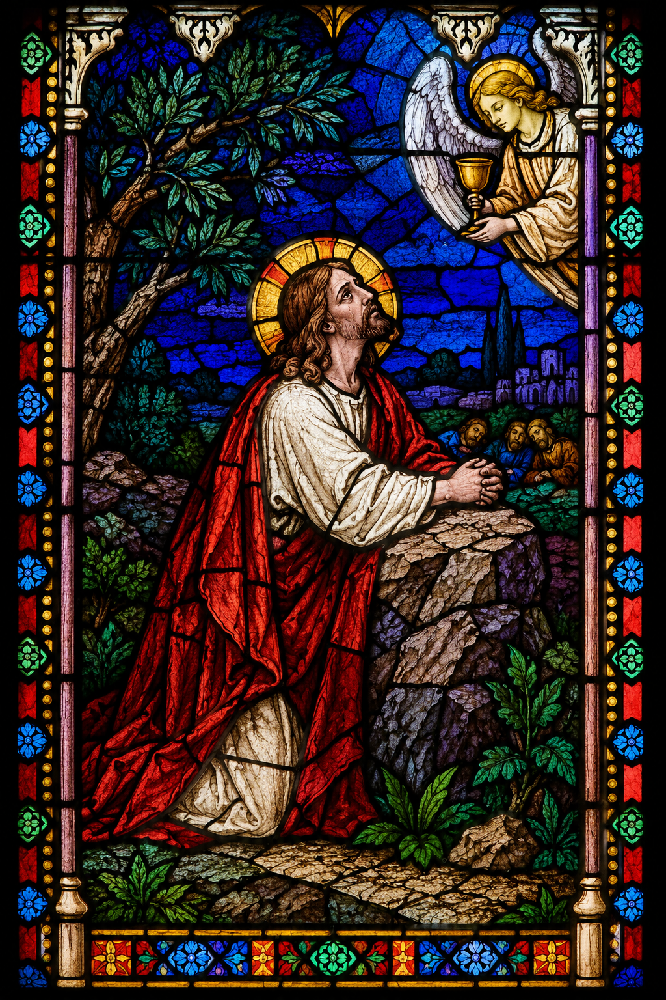
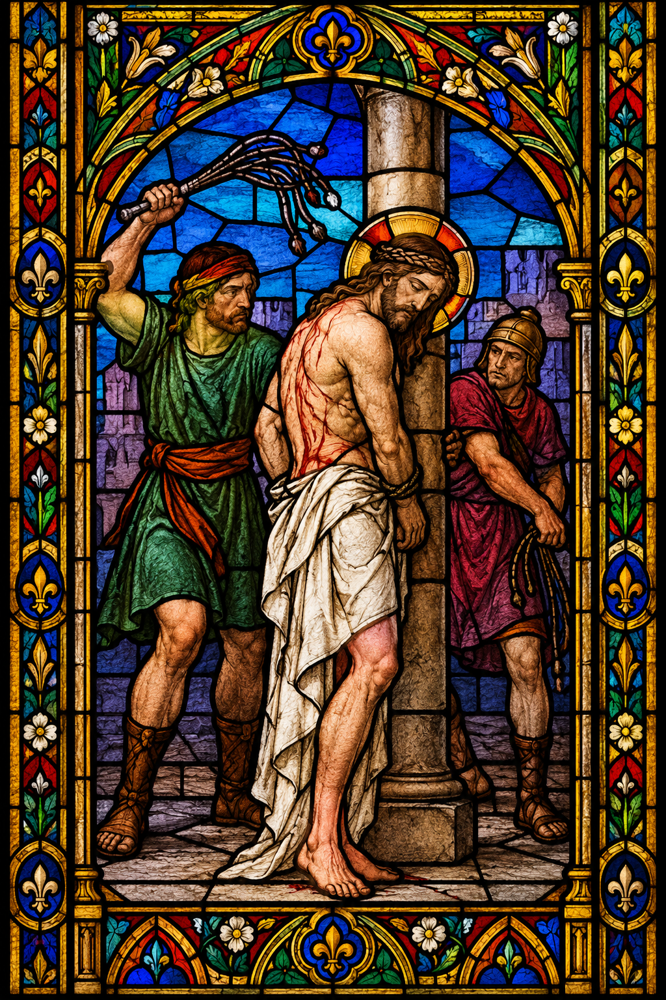
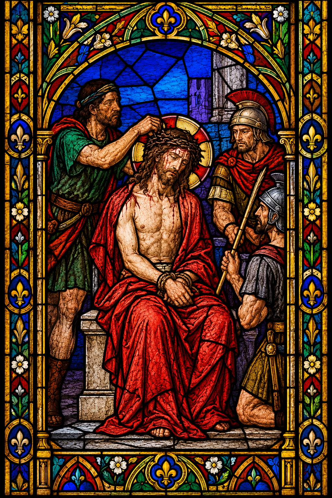
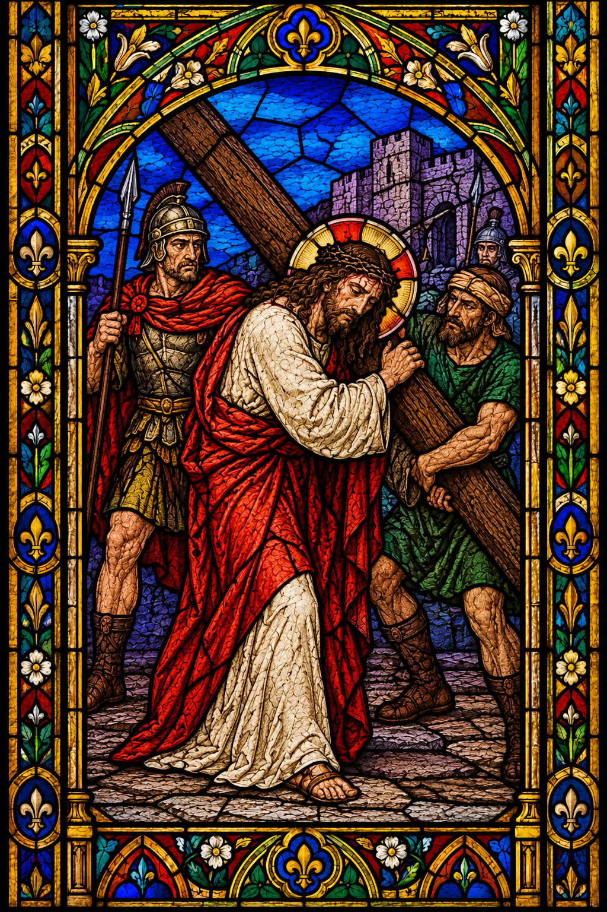
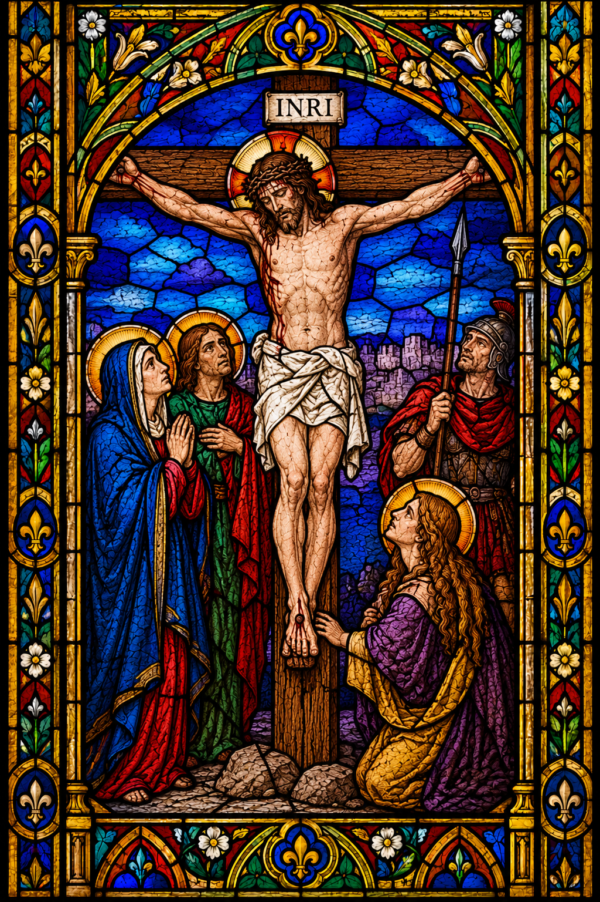

CAPÍTULO I
Infância e Juventude
Desde a infância, São José Sánchez del Río demonstrava uma fé profunda e grande devoção a Deus. Educado em uma família católica, destacou-se ainda pequeno pelo amor e pela fidelidade aos ensinamentos cristãos.
SAIBA MAIS
Quando jovem, serviu no altar como coroinha, revelando sua dedicação à Igreja. Sua piedade e sua coragem eram reconhecidas pelos fiéis da cidade. Em casa e na comunidade, era conhecido pela obediência, pelo carinho com a família e pela disposição em ajudar os outros.
CAPÍTULO II
O ato de coragem na batalha
A coragem de São José ficou evidente durante uma batalha em 5 de fevereiro de 1928, quando percebeu que o cavalo de seu comandante havia sido abatido pelos inimigos. Diante da situação, o jovem tomou uma atitude que demonstrava sua bravura e disposição para ajudar.
SAIBA MAIS
Sem hesitar, José ofereceu seu próprio cavalo ao general, permitindo que ele escapasse do perigo. Em seguida, permaneceu no campo de batalha, lutando ao lado dos cristeros até ficar sem munição.
CAPÍTULO III
A firmeza na fé durante o cativeiro
Mesmo após ser capturado, São José permaneceu firme em suas convicções. Os soldados tentaram convencê-lo a abandonar os cristeros e até seu pai tentou negociar sua libertação, mas o jovem recusou-se a renunciar à fé, pois considerava sua fidelidade a Cristo mais importante do que a própria vida.
SAIBA MAIS
José foi levado à sua cidade natal e mantido preso na igreja paroquial, transformada em quartel pelos soldados do governo. Mesmo ali, onde antes servia como coroinha, continuou repreendendo os militares pelo desrespeito à casa de Deus.
CAPÍTULO IV
Carta de despedida à mãe
Antes de morrer, São José escreveu uma mensagem à sua mãe, demonstrando serenidade e confiança em Deus. Mesmo diante da morte iminente, preocupava-se em consolá-la e transmitir esperança:
Mãezinha: sim, me prenderam e vão me matar, mas estou feliz. A única coisa que me entristece é que tu te aflijas. Não chores, nos veremos no Céu.
CAPÍTULO V
O martírio
A perseguição religiosa no México atingia até os mais jovens. Mesmo diante das pressões para abandonar sua fé durante o cativeiro, São José Sánchez del Río permaneceu fiel a Cristo, e as autoridades decidiram condená-lo à morte.
SAIBA MAIS
Segundo os relatos, cinco dias após sua captura e sem passar por julgamento, o jovem recebeu a sentença de morte. Antes da execução, os soldados submeteram José a um castigo cruel, ferindo as solas de seus pés e obrigando-o a caminhar até o cemitério da cidade, na esperança de fazê-lo renegar sua fé.
Apesar da dor e do sofrimento, José não cedeu. Sua caminhada até o cemitério tornou-se um testemunho de coragem e devoção. Conforme os relatos, durante o percurso, ele cantava louvores a Cristo Rei e à Virgem de Guadalupe, demonstrando que permanecia firme em sua fé mesmo diante das provações.
Ao chegar ao local da execução, os soldados perguntaram ironicamente quais seriam suas últimas palavras para os pais. Com a mesma firmeza que demonstrara durante todo o cativeiro, José respondeu: “Que viva Cristo Rei! Nos veremos no Céu!”
Logo depois, os soldados cumpriram a sentença, e o jovem foi morto por não renunciar a Cristo. Assim, aos catorze anos, São José Sánchez del Río consumou seu martírio, deixando um testemunho de fidelidade a Deus e coragem diante da perseguição religiosa.
CAPÍTULO VI
Linha do tempo de São José Sánchez del Río
-
1913
Nasceu em 28 de março, em Sahuayo, no estado de Michoacán, México, em uma família católica que contribuiu para sua formação na fé.


-
1926
Com o início da Guerra Cristera, aos 13 anos, desejou apoiar os católicos perseguidos e defender sua fé durante o conflito religioso no México.

-
1928
Capturado em 5 de fevereiro durante um confronto, foi levado a Sahuayo e morto em 10 de fevereiro, aos 14 anos, por permanecer firme em sua fé católica.

-
2005
Foi beatificado em 20 de novembro, em Guadalajara, no México, durante o pontificado do papa Bento XVI, em reconhecimento ao seu testemunho de fé e martírio.

-
2016
Em 16 de outubro, o papa Francisco o canonizou na Praça de São Pedro, no Vaticano, reconhecendo-o oficialmente como santo da Igreja Católica.

A festa de São José Sánchez del Río é celebrada no dia 10 de fevereiro, data em que a Igreja recorda seu martírio, ocorrido em 1928, no México. Seu testemunho de coragem, fidelidade a Cristo e amor à fé católica continua inspirando os fiéis até hoje.
REZEMOS
Oração a São José Sánchez del Río
Senhor Deus, que concedestes a palma do martírio a São José Sánchez del Río por professar e defender com o seu sangue a fé em Cristo Rei do Universo, concedei-nos, por sua intercessão, a graça de sermos como ele: fortes na fé, seguros na esperança e constantes na caridade. Nós vos pedimos por Cristo, nosso Senhor. Amém.
¡Viva Cristo Rey!